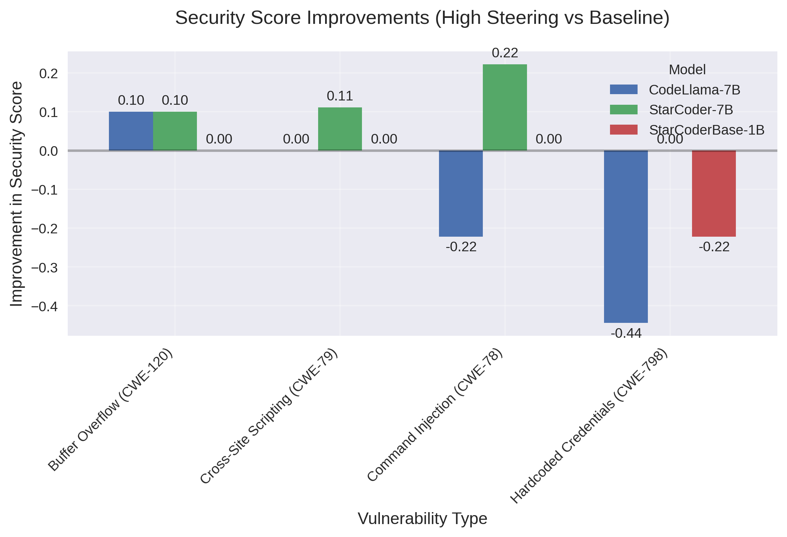
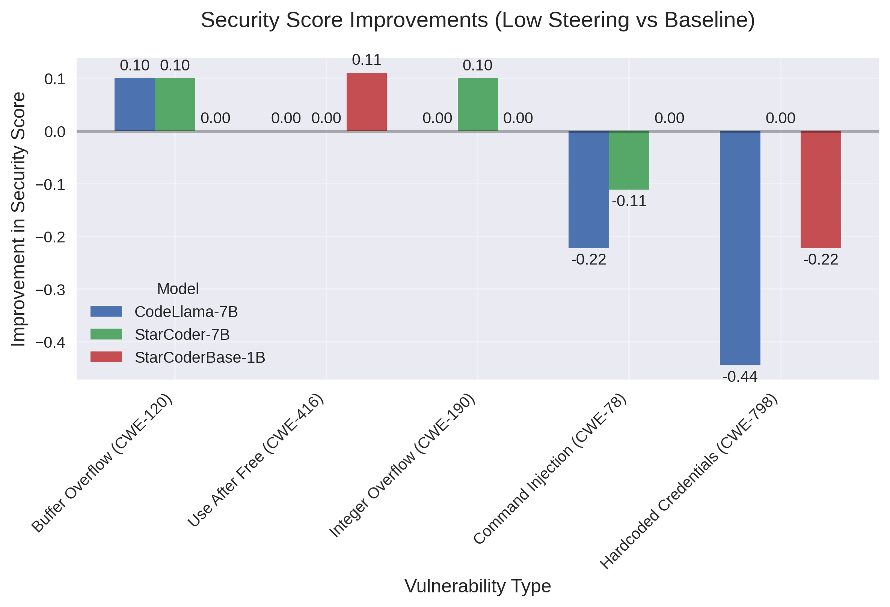

In an era where AI code generation is increasingly integrated into software development workflows, ensuring the security of AI-generated code has become a critical concern. Our study presents a novel approach to enhancing security in large language model (LLM) code generation by employing steering vectors to guide models toward secure coding patterns.

Our findings reveal a nuanced relationship between steering techniques and security outcomes. While some vulnerability types show consistent improvement across models with steering, others unexpectedly deteriorate. Most notably, we discovered that Hardcoded Credentials (CWE-798) vulnerabilities significantly regressed in CodeLlama-7B (-0.44) and StarCoderBase-1B (-0.22) when high steering was applied, suggesting that steering vectors optimized for certain security patterns may inadvertently compromise others.

Intriguingly, our analysis shows that lower steering intensities often produce more balanced security improvements with fewer regressions. For instance, StarCoder-7B showed improvement for Integer Overflow (CWE-190) with low steering, while other vulnerability types like Buffer Overflow (CWE-120) saw modest improvements across multiple models. This challenges the intuitive assumption that stronger guidance always leads to better security outcomes.
Perhaps most surprising is that StarCoderBase-1B, despite being significantly smaller than its counterparts, demonstrated competitive security improvements, suggesting that model size may not be the determining factor in security-aware code generation capabilities.
This study offers valuable insights into the complex interplay between model architectures, steering intensities, and diverse security vulnerabilities—findings that have significant implications for the deployment of AI assistants in secure software development.
This study evaluates the effectiveness of different language models in generating secure code through steering vectors. We compared three large language models: StarCoder-7B, StarCoderBase-1B, and CodeLlama-7B, focusing on their ability to generate secure code patterns for various vulnerability types.
Data Source:
Data Formatting:
Steering Vector Construction:
Example: SQL Injection (CWE-89) Steering Vector Construction
For SQL Injection vulnerabilities, we constructed steering vectors by:
Token Analysis: We compared the frequency of tokens in secure vs. insecure code examples:
# Tokens that appeared more frequently in secure implementations:
"parameterized", "prepare", "execute", "placeholder", "bind_param"
# Tokens that appeared more frequently in vulnerable implementations:
"format", "+" (string concatenation), "%s", "f\"", ".format("
Vector Construction: We created an embedding vector that increased probability of secure patterns:
# Simplified representation of vector components
sql_injection_vector = {
"parameterized_queries": +0.8, # Strongly encourage parameterized queries
"input_validation": +0.6, # Encourage input validation
"string_concatenation": -0.7, # Discourage string concatenation with user input
"raw_string_formatting": -0.5 # Discourage format strings with user input
}
Application During Generation: During code generation, we calculate the dot product between this vector and the model's hidden states, then add this value to the logits (token probabilities) before sampling. This shifts generation away from vulnerable patterns and toward secure implementations:
# Simplified pseudocode for applying steering during generation
def generate_with_steering(prompt, steering_vector, strength=1.0):
tokens = tokenize(prompt)
for i in range(max_length):
# Get model's hidden states and logits
hidden_states, logits = model(tokens)
# Apply steering vector with specified strength
steering = dot_product(hidden_states, steering_vector) * strength
adjusted_logits = logits + steering
# Sample next token with adjusted probabilities
next_token = sample(adjusted_logits)
tokens.append(next_token)
return detokenize(tokens)
This example illustrates how we transform qualitative security patterns into quantitative steering vectors that guide model generation toward more secure code patterns.
Steering Implementation:
Application Layer
We applied steering vectors at the final hidden layer of the model architecture:
Vulnerability-Specific Steering Approach
We created and applied separate steering vectors for each vulnerability type:
This approach differs from using a single generic "security vector" and ensures that the steering is optimized for the specific patterns and tokens relevant to each vulnerability category.
Our comparative analysis of StarCoder-7B, StarCoderBase-1B, and CodeLlama-7B reveals distinct patterns in how different models respond to steering vectors:
Overall Improvements:
Vulnerability-Specific Results:
Most Effective Improvements:
Least Effective/Negative Results:
Steering Intensity Comparison:
Our analysis revealed that some vulnerability types (particularly Hardcoded Credentials (CWE-798)) actually got worse with steering. We hypothesize several potential explanations:
Interference with Security Patterns: Steering vectors may inadvertently interfere with security patterns related to credential handling. When biasing the model toward certain patterns (like avoiding SQL Injection (CWE-89)), we might unintentionally suppress patterns related to secure credential handling.
Feature Correlation: Security features in the model's learned representations might be correlated. Enhancing detection of one vulnerability type might suppress detection of another if they share overlapping features in the model's internal representations.
Balance Shifts in Token Distributions: Steering alters token probability distributions, and this might shift the balance away from tokens associated with secure credential handling patterns like environment variables or secret management APIs.
Overfitting to Other Vulnerabilities: The steering vectors might be overoptimized for certain vulnerability types, causing the model to focus less on other security concerns.
High Steering Configuration (3.0 steering, 0.4 temperature):
Low Steering Configuration (1.0 steering, 0.6 temperature):
Model Performance:
Steering Effectiveness:
Vulnerability Type Impact:
Steering Intensity: